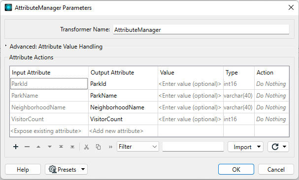

The AttributeCopier and AttributeRenamer transformers can only set an attribute value where the attribute doesn't exist.
After completing this lesson, you'll be able to:
Creating attributes and setting a value are the primary attribute functions used within FME. When an attribute is created, its value can be set in several ways.
The transformers capable of creating an attribute - and setting its value - are:
The AttributeCopier and AttributeRenamer transformers can only set an attribute value where the attribute doesn't exist.
We'll concentrate on the AttributeManager for most operations, so here is a quick overview of that transformer.
The AttributeManager parameters dialog has several fields: Input Attribute, Output Attribute, Attribute Value, and Action. Uniquely among attribute-handling transformers, it is automatically filled in with the details of the attributes connected to it:

The user can set the action field, but the transformer will also set it automatically when a change is made to the other fields.
If you enter a new attribute name into the Output Attribute field, FME will create it in the output.

The text <Add new Attribute> highlights where you can create a new attribute. By default, when the Attribute Value field is empty, a new attribute has no value.
A fixed (or constant) value for an attribute can be created by simply entering a value into the Attribute Value field:
Here, for example, a new attribute called City is given a fixed value of Vancouver. The transformer will set that value for every feature entering the transformer.
The user has also assigned a fixed value to the existing attribute NeighborhoodName. They gave it the value "Kitsilano." Notice how entering a value into that field automatically changes the Action field from "Do Nothing" to "Set Value."
The AttributeManager, AttributeCreator, and some other attribute transformers that can set values will overwrite existing values. If you are creating attributes and setting values, they will also silently overwrite those attributes. For example, say your data already has an existing attribute called UpdatedDate, and every feature has a value of 1698254789. Then, you create a new attribute called UpdatedDate using an AttributeCreator and set the value to the current date time, e.g., 11-02-2023. FME will overwrite the old attribute with this new value. If you don't see the values you expect for an attribute, please ensure your transformers are correctly configured.